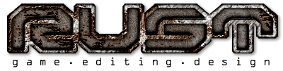

Quake2 sites
General resource sites
|  | - This is pretty much the ultimate mapping resource site. It has an overwhelming amount of info. Go and seek knowledge :) |
| - A mappers heaven. This is the official BSP map editing program site. Has a wealth of info including tutorials, F.A.Q's, forums etc. |